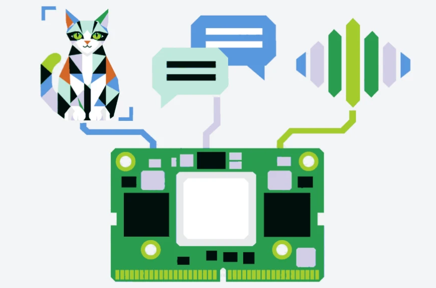
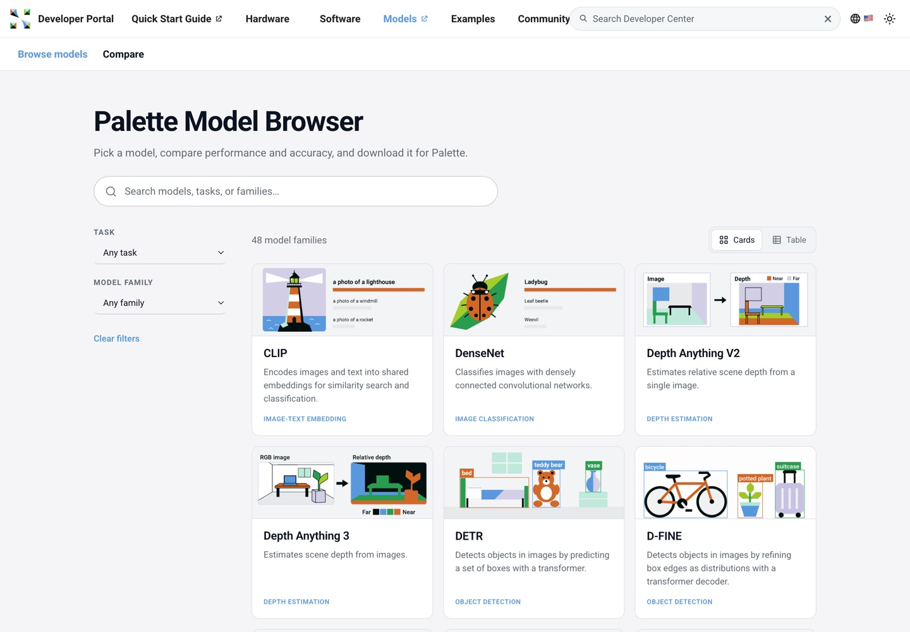

Find a model for your task.
The catalog holds 141 models in 48 families. They cover detection, segmentation, pose, depth, embeddings, language, vision-language and speech.
NOVEMBER 17, 2026 / MODEL BROWSER
A world of models, measured on Modalix
Every model starts from its official source. We convert it, compile it, and measure its performance and accuracy on a Modalix DevKit. The Model Browser shows each result, and a public repository holds every script that produced it.

Counts from the Model Browser on November 17, 2026. A variant is one compiled precision of a model, such as W8A8.
01 / THE CATALOG
The Model Browser is the public catalog of models that run on SiMa.ai Modalix.
The catalog holds 141 models in 48 families. They cover detection, segmentation, pose, depth, embeddings, language, vision-language and speech.
Each model page lists throughput, latency, power and accuracy, measured on a Modalix DevKit. The measured accuracy sits beside the score the model's authors published.
Most models are compiled at more than one precision, such as W8A8 or W16A16. Each variant has its own measured speed and accuracy.

02 / MEASURED ON MODALIX
All results below are published in the Model Browser. Each one was measured on a Modalix DevKit.
987.3 inferences/s at 7.13 W of SoC power, with 38.46% mAP 50–95 on COCO.
45.04% mAP 50–95 on COCO, at 6.90 W of SoC power.
88.86% k-NN top-1, against 88.88% for the FP32 baseline.
67.1 ms to the first token for a 128-token prompt, 228.1 ms with a 448×448 image.
26 detectors on COCO 2017 val. Each point is the first variant the Model Browser lists for the model.
| Model | Variant | Inferences/s | mAP 50–95 |
|---|---|---|---|
| YOLO11n-det | W8A8 | 996.9 | 38.17% |
| YOLOv8n-det | W8A8 | 993.7 | 36.36% |
| YOLO26n-det | W8A8 | 987.3 | 38.46% |
| YOLOX-s | W8A8 | 871.1 | 39.78% |
| YOLOv8s-det | W8A8 | 853.0 | 43.82% |
| YOLO11s-det | W8A8 | 818.3 | 45.55% |
| YOLO26s-det | W8A8 | 721.4 | 44.77% |
| YOLOX-m | W8A8 | 402.1 | 46.30% |
| YOLO11m-det | W8A8 | 382.0 | 50.15% |
| YOLOv8m-det | W8A8 | 379.9 | 48.63% |
| YOLO26m-det | W8A8 | 364.2 | 48.97% |
| YOLO11l-det | W8A8 | 292.1 | 51.64% |
| YOLOX-l | W8A8 | 221.1 | 49.23% |
| YOLOv8l-det | W8A8 | 217.7 | 50.75% |
| RF-DETR Nano | W8A8_MIXED_W16A16 | 193.8 | 45.04% |
| DETR ResNet-50 | W8A8_MIXED | 183.7 | 36.09% |
| D-FINE Nano | W8A8_MIXED_W16A16 | 172.8 | 41.52% |
| DETR ResNet-101 | W8A8_MIXED | 142.8 | 36.83% |
| YOLOv8x-det | W8A8 | 136.2 | 52.19% |
| YOLO11x-det | W8A8 | 131.5 | 52.50% |
| YOLO26x-det | W8A8 | 129.9 | 52.91% |
| YOLOX-x | W8A8 | 121.5 | 50.57% |
| RF-DETR Small | W8A8_MIXED_W16A16 | 99.1 | 50.37% |
| RF-DETR Medium | W8A8_MIXED_W16A16 | 72.9 | 50.81% |
| YOLO26l-det | W16A16 | 65.5 | 54.07% |
| RF-DETR Large | W8A8_MIXED_W16A16 | 35.4 | 52.79% |
Tokens per second for the fastest model of each family. W4A16, 128-token prompt.
The 8B and 9B models in the catalog generate 12 to 13 tokens per second.
03 / HOW EVERY RESULT IS MADE
Each result above comes from the same five steps. Automation runs the same scripts that you can run.
model.yaml names the official model and pins its files by SHA-256. Every build starts from the same bytes.
convert.py downloads the official model and exports it to ONNX.
compile.py compiles the ONNX with the Model Compiler into an MPK, the archive a DevKit runs.
performance.py measures speed on a Modalix DevKit. accuracy.py scores the model on its dataset.
The Model Browser shows the results on the model's page, with a download when the license allows it.
The Model Browser is built from the sima-neat/models repository on GitHub. Each model has a folder with its declaration and its scripts, and the GitHub link on a model page opens that folder.
Run the scripts on your own machine and DevKit, then compare your results with the model page. Some models have no download because their license forbids redistribution. You can still build them from their scripts.
model.yaml the official model and every pinned input
README.md what the model does, its inputs and outputs
scripts/
convert.py official model to ONNX
compile.py ONNX to MPK
performance.py speed on a DevKit
accuracy.py score on the dataset
tests/ checks for each step04 / GET STARTED
Use the browser to explore and compare. Use sima-cli to download from a terminal.
IN YOUR BROWSER
Open Compare to plot the models of one task by accuracy and speed.
FROM THE TERMINAL
sima-cli models list
sima-cli models download --id resnet_50 --variant w8a8The commands read the public Model Registry. You need no account.
Read the download guide (opens in a new tab)MODEL ZOO
The Model Browser replaces the Model Zoo. Models already in the Model Zoo stay available there. We publish new models only in the Model Browser.
Open the Model Zoo (opens in a new tab)START WITH A MODEL
141 models with their measured results.